자리와 행동 순서
3×4 격자에 다섯을 세우고 1~5번 행동 순서를 매긴다. 스킬마다 닿는 칸 모양이 달라서, 같은 다섯이라도 세우는 자리와 순서에 따라 승패가 갈린다.
한·중·일의 영웅 열다섯 중 다섯을 골라 3×4 진형에 세우고, 라운드 사이마다 자리를 옮겨 가며 찢긴 저승 명부를 염라대왕에게 돌려주러 가는 동양풍 배치 턴제 RPG.
능력치만큼 자리와 순서가 중요한 전투. 셋 다 "어디에, 몇 번째로 세우나"라는 한 가지 질문에서 나온다.
3×4 격자에 다섯을 세우고 1~5번 행동 순서를 매긴다. 스킬마다 닿는 칸 모양이 달라서, 같은 다섯이라도 세우는 자리와 순서에 따라 승패가 갈린다.
라운드가 끝날 때마다 살아 있는 아군의 자리를 옮길 수 있다. 보스가 붉은 칸으로 다음 공격을 예고하면 비키고, 도발·결계 줄에 맞춰 다시 짠다. 마우스를 올리면 다음 행동이 그대로 미리 보인다.
영웅과 요괴 모두 목·화·토·금·수 중 하나를 가진다. 극하는 쪽이 치면 1.2배, 극당하면 0.8배. 덱에 같은 오행을 모으거나 다섯을 모두 넣으면 덱 전원이 시너지를 받는다.
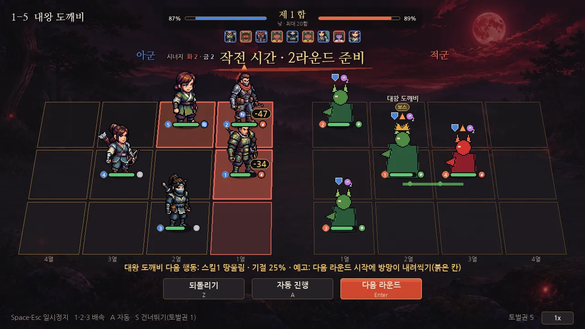
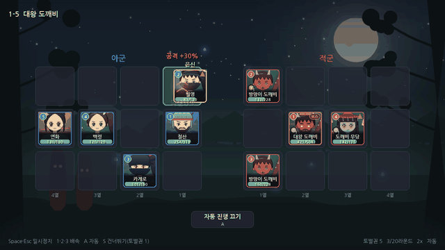
저승 명부 한 장이 찢겨 나가 이승과 저승의 경계가 흐려졌다. 도깨비는 길손을 털고, 죽은 이는 눕지 못하고, 묶여 있던 흉수가 풀려났다. 떠돌이 무사와 의적, 사냥꾼과 술사, 의녀가 한 등불 아래 모여 그 장을 염라대왕에게 돌려주러 간다.
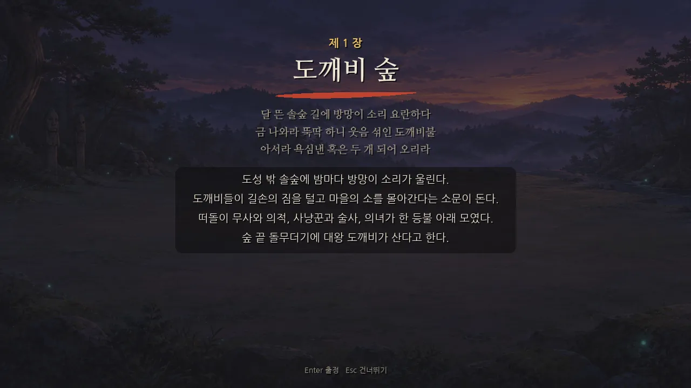
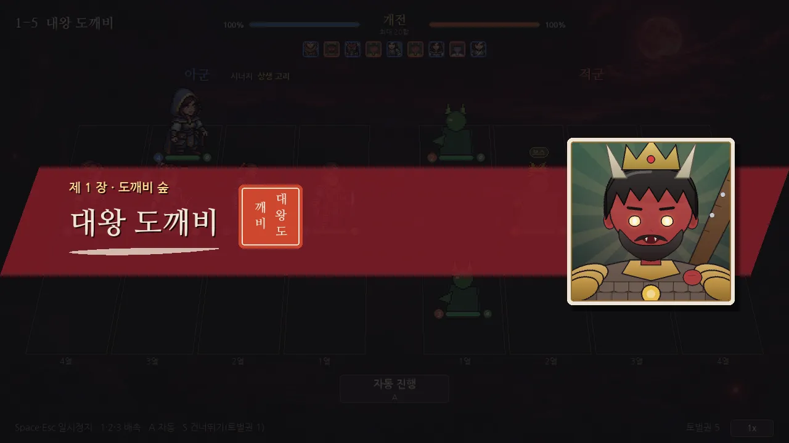
장 보스를 처음 출정할 때는 대화창으로 보스와 말을 주고받고, 보스를 처음 꺾으면 정해진 동료가 이야기와 함께 합류한다. 화자는 시작 다섯과 앞 장에서 이미 합류한 동료만 쓴다. 이야기 글은 모두 직접 지은 것이다.
다섯 계열 × 한·중·일 세 나라. 계열마다 레어·에픽·전설이 한 명씩이고, 레어 다섯이 시작 동료다. 등급 배율은 레어 1.0 · 에픽 1.15 · 전설 1.3. 모두 기본 공격 · 스킬 1 · 스킬 2 · 궁극기 네 칸과 패시브 하나를 가진다.
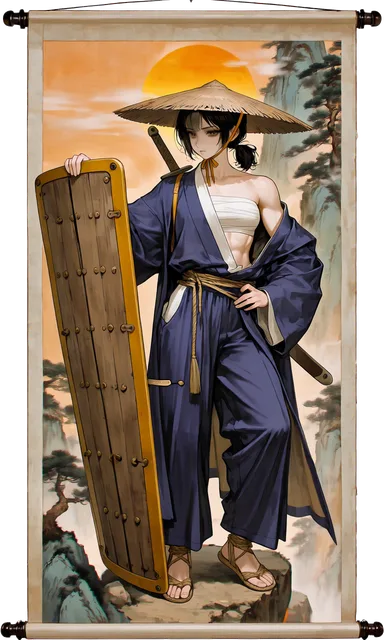
바위를 닮은 떠돌이 무사
바위 자세 · 밀어붙이기 · 산사태
패시브 되받아치기
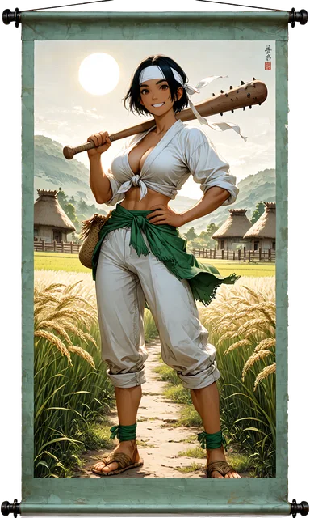
힘이 장사인 마을 머슴
어깨 치기 · 버티기 · 지축 강타
패시브 뚝심
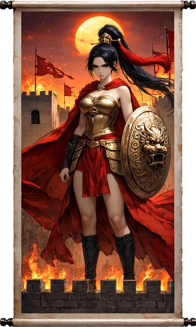
무너지지 않는 철벽 장군
철벽 · 산악 돌진 · 태산압정
패시브 철벽 수호
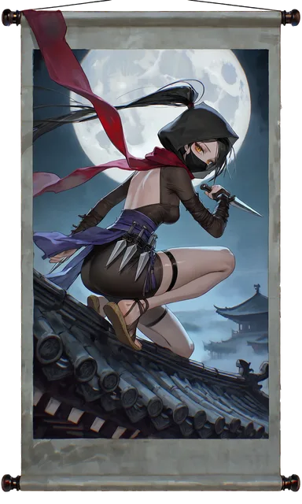
달그림자를 밟는 의적
그림자 베기 · 은신 · 월하참
패시브 기습
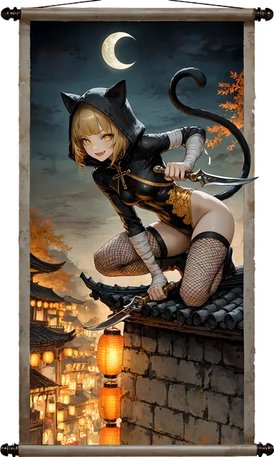
밤 지붕을 달리는 고양이 도둑
쌍비수 · 야습 · 묘영난무
패시브 복수의 발톱
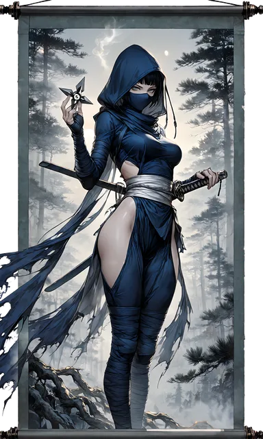
아지랑이처럼 사라지는 자객
그림자 분신 · 독 칼날 · 아지랑이 일섬
패시브 아지랑이
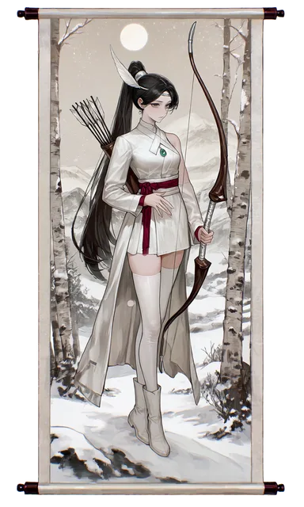
흰 깃 화살의 사냥꾼
관통 화살 · 화살비 · 백발백중
패시브 사냥 신호
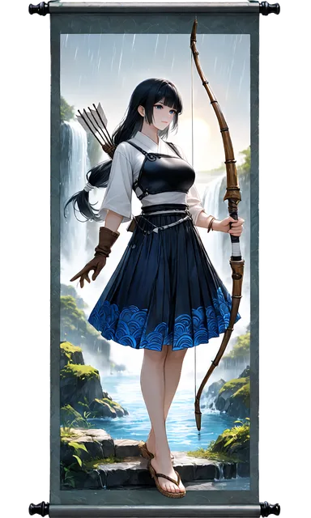
사당의 활을 이은 궁사
파마의 화살 · 연속 사격 · 하마야
패시브 파마의 표식
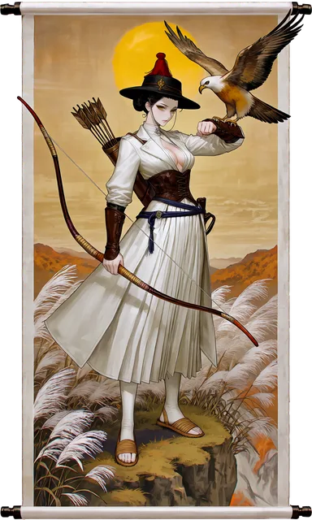
매처럼 멀리 보는 명궁
연사 · 매의 눈 · 천궁 관통
패시브 첫 화살
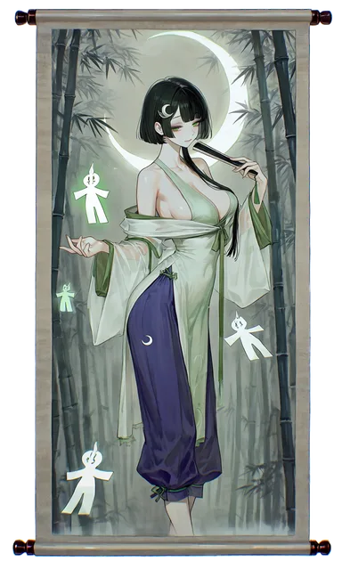
달밤의 술사
월광 · 달의 저주 · 백귀 봉인
패시브 식신 호위
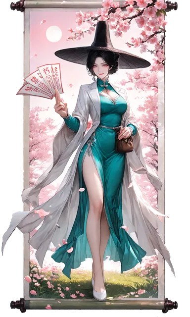
복사꽃 부적을 쓰는 도사
도깨비불 · 복사꽃 결계 · 천둥 부적
패시브 복사꽃 부적
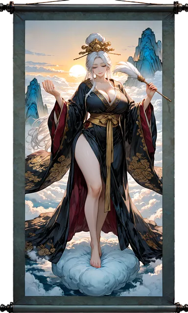
구름 위의 신선
오행 화염 · 뇌전 · 태극 열파
패시브 뇌운
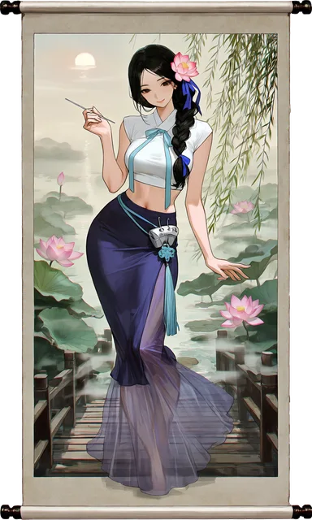
연꽃 향이 나는 의녀
연꽃 치유 · 연잎 방패 · 만개
패시브 연꽃 향
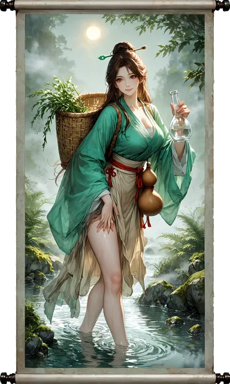
안개 속 약초꾼
운무 · 기공 보호 · 구름 치유
패시브 안개 장막
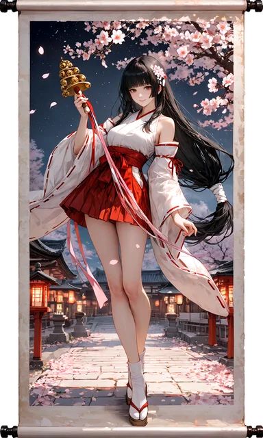
벚꽃 사당의 무녀
벚꽃 가호 · 신락 · 하나미
패시브 벚꽃 결계
굵은 글씨가 궁극기. 합류 표시는 그 장의 보스를 처음 깨면 Lv.1로 확정 합류하는 동료다(이미 뽑았으면 보상만). 일러스트는 족자 그림이고, 전투에서는 같은 인물이 픽셀 아트로 나온다.
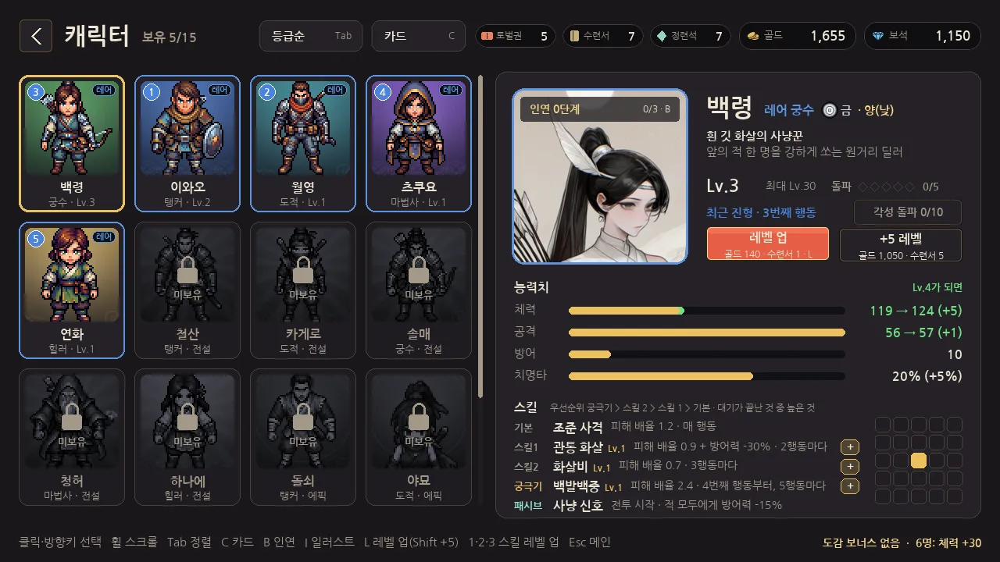
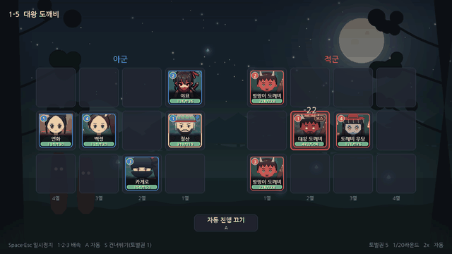
전투 결과는 시드와 배치만으로 정해진다. 같은 시드에 같은 재배치를 하면 같은 전투가 나오고, 연출과 소리는 결과에 끼어들지 않는다.
보유 동료 중 후보 셋이 나오고, 하나를 고르면 그 자리에만 새 후보가 들어온다. 새로고침 2회. 다섯을 채우면 덱이 된다.
3×4 격자에 끌어다 놓고 행동 순서를 정한다. 공격 범위와 예상 피해, 예상 승률이 보인다. 추천 배치는 상성과 모의전 16판으로 고른다.
순서대로 한 번씩 행동한다. 1라운드는 편성 그대로, 그 뒤 라운드마다 작전 시간이 열린다. 20라운드를 넘기면 패배.
별 셋: 클리어 · 아군 사망 없이 · 10라운드 이내. 첫 클리어 보상, 반복 클리어 보상, 장 별 보상.
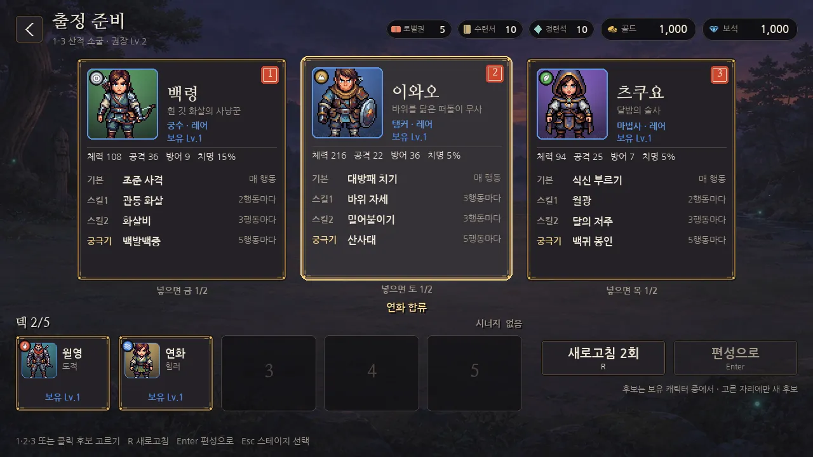
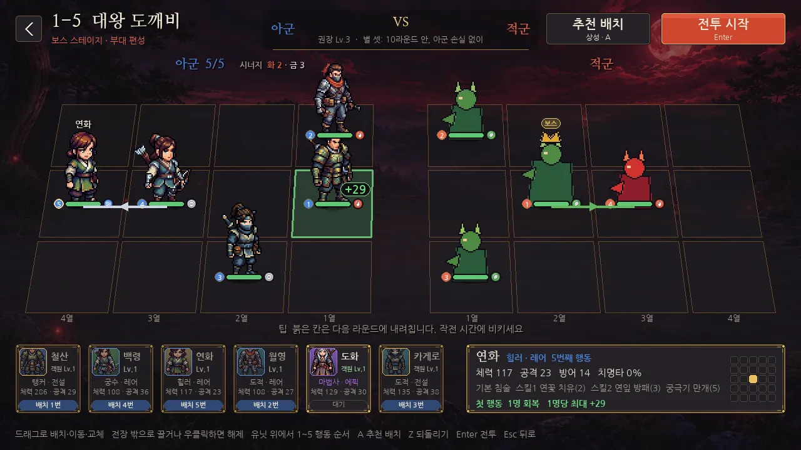
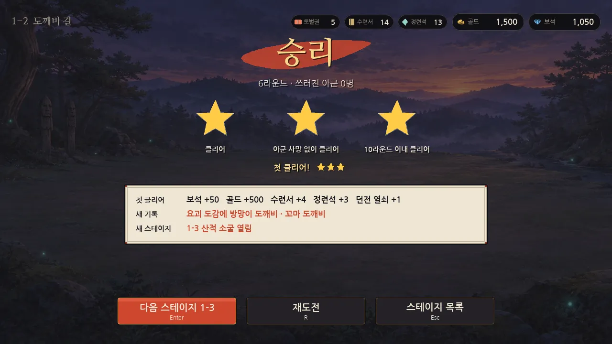
스킬마다 몇 행동마다 쓰는지(대기)와 몇 번째 행동부터 쓰는지가 있다. 자기 차례마다 대기가 하나씩 줄고, 준비된 것 중 궁극기 → 스킬 2 → 스킬 1 → 기본 순서로 하나를 쓴다. 예를 들어 스킬 1(2행동마다, 2번째부터) · 스킬 2(3행동마다, 3번째부터) · 궁극기(5행동마다, 4번째부터)라면:
| 효과 | 닿는 쪽 | 규칙 |
|---|---|---|
| 보호막 | 아군 | 공격력 × 배율만큼 피해를 먼저 받는다 |
| 기절 | 적 | 다음 차례 하나를 건너뛴다. 깨어난 뒤 한 번 행동할 때까지는 다시 걸리지 않는다 |
| 지속 피해 | 적 | 라운드가 시작될 때마다 받는다. 방어력과 보호막을 무시한다 |
| 방어 감소 | 적 | 방어력 −배율. 방어 강화와 함께 걸리면 서로 빼고 더한다 |
| 도발 | 아군 | 적의 앞·뒤를 노리는 스킬을 끌어온다. 가장 강한 적·가장 약한 적·무작위를 노리는 스킬은 끌리지 않는다 |
| 가호 | 아군 | 쓰러질 피해를 받으면 일어서고 약화가 풀린다. 전투마다 한 번 |
| 회피 · 엄호 · 광폭 | 패시브·보스 | 피해 하나는 회피 → 엄호 → 보호막 → 체력 순서로 처리한다 |
다음 라운드에 내려칠 칸을 붉게 보여 준다. 작전 시간에 비켜야 한다.
체력이 정해진 만큼 줄면 변신하거나(구미호 본색, 이무기 승천) 분신·졸개를 부른다(여우 분신, 우두·마면).
몇 라운드부터 광폭해지거나, 한 번 되살아나거나, 회복이 막히는 결계 줄을 친다.
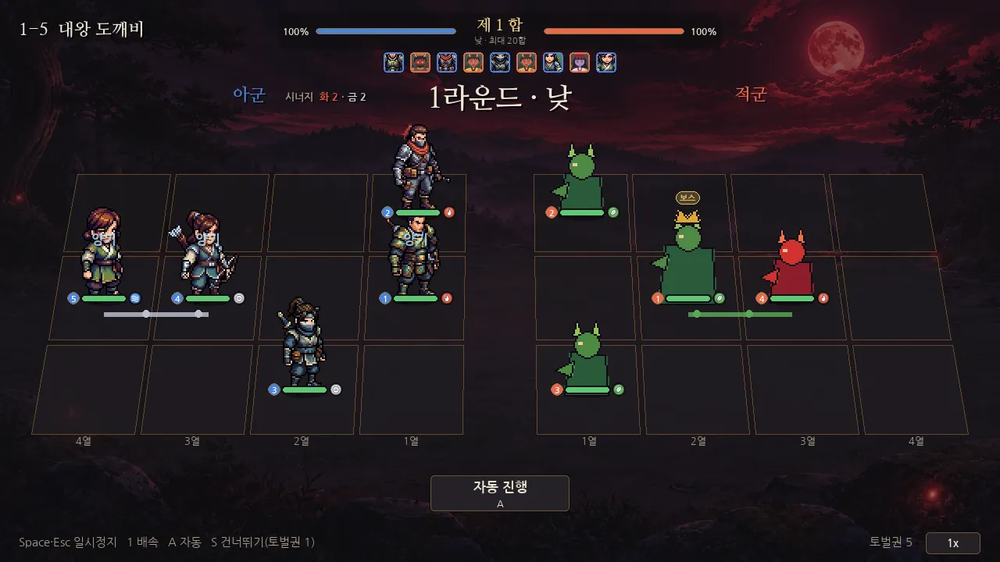
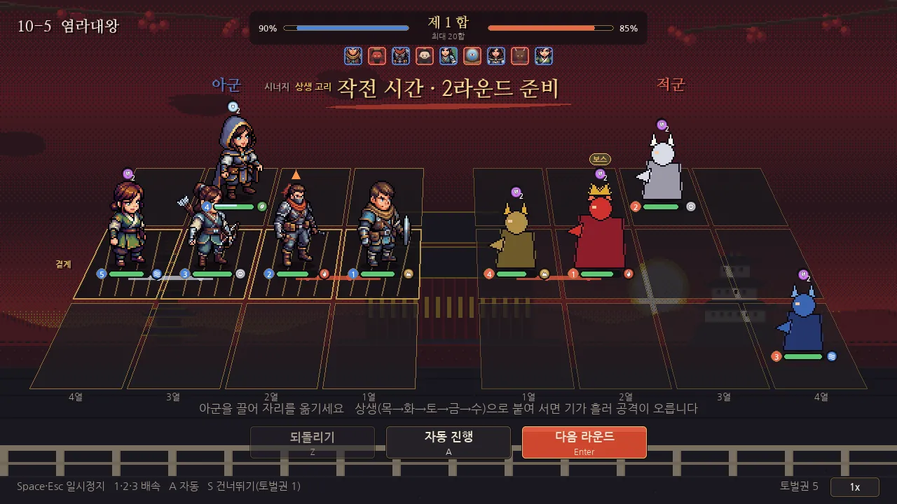
상극은 목극토 · 토극수 · 수극화 · 화극금 · 금극목. 극하는 쪽이 치면 피해 ×1.2, 극당하는 쪽이 치면 ×0.8이다. 피해 숫자 옆에 ▲·▼로 보인다. 지속 피해에는 들지 않는다.
| 오행 | 영웅 | 덱에 2명 / 3명이면 덱 전원 | 주로 나오는 곳 |
|---|---|---|---|
| 목 | 돌쇠 · 츠쿠요 · 소운 | 체력 +8% / +16% | 1장 도깨비 숲 |
| 화 | 철산 · 월영 · 하나에 | 공격 +8% / +16% | 4장 여우 골짜기 |
| 토 | 이와오 · 야묘 · 솔매 | 방어 +15% / +30% | 2장 황사 관문 |
| 금 | 카게로 · 백령 · 도화 | 치명타 +6%p / +12%p | 5장 사흉 봉인지 |
| 수 | 유미 · 청허 · 연화 | 회복량(회복·보호막) +15% / +30% | 3장 요괴 섬 |
상생 고리: 덱에 다섯 오행이 모두 있으면 전원 체력·공격 +3%. 시작 레어 다섯이 마침 오행 다섯을 모두 가져서, 처음부터 시너지가 켜진 채로 배운다. 고리를 작게, 같은 오행 모으기를 크게 두어 뽑기로 같은 오행을 모으면 고리보다 낫게 했다.
장마다 다섯 스테이지, 다섯째는 보스다. 권장 레벨은 1-1 Lv.1에서 10-5 Lv.30까지 오른다. 보스를 처음 깨면 다음 장의 동료가 합류한다.
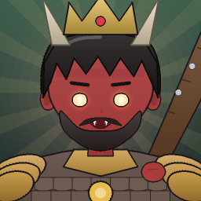
도성 밖 솔숲에 밤마다 방망이 소리가 울린다.
붉은 칸은 다음 라운드에 내려친다. 작전 시간에 비켜라.
합류 · 도화
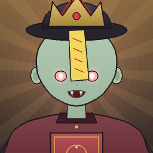
무덤에 누워야 할 이들이 부적을 붙인 채 모래 위를 걷는다.
한 번 쓰러져도 되살아난다. 시독과 망자의 행진을 버텨라.
합류 · 야묘
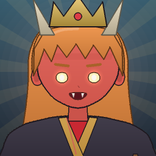
벌줄 이가 없으니 섬의 요괴들은 밤낮없이 잔치를 연다.
6라운드부터 취기 폭발로 광폭해진다. 그 전에 몰아붙여라.
합류 · 유미
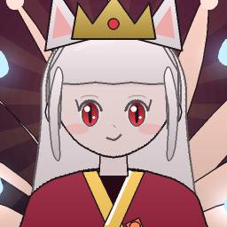
명부에서 제 이름을 지우면 영원히 살 수 있다고 믿는 아홉 꼬리 여우.
체력이 절반이 되면 본색을 드러내고 여우 분신 둘을 부른다.
합류 · 소운
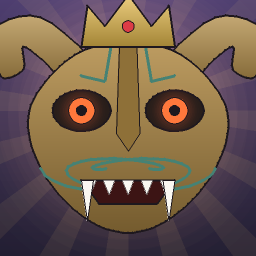
명부가 찢기던 날, 네 흉수를 묶은 매듭도 함께 풀렸다.
탐식의 아가리가 예고된 한 줄을 삼킨다. 8라운드부터 광폭.
합류 · 돌쇠
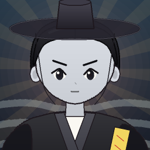
명부 한 장이 비었으니 사자들도 누구를 건네야 할지 모른다.
명부에 적힌 칸(붉은 칸)에 서 있으면 쓰러진다.
합류 · 하나에
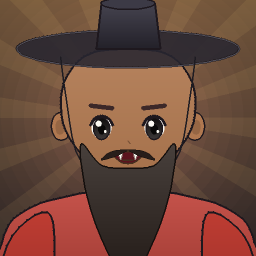
경계가 흐려진 뒤로 장승들은 산 자도 죽은 자도 들이지 않는다.
두 장승의 줄은 결계다. 힐러는 결계 밖 줄에 두어라.
합류 · 철산
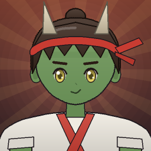
엽전 대신 웃음을, 비단 대신 옛이야기를 받고 물건을 판다.
샅바 씨름이 1번과 마지막 아군의 자리를 바꾼다. 순서를 미리 바꿔 두어라.
합류 · 솔매
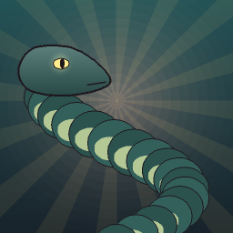
경계가 흐려진 틈에 천 년 묵은 이무기가 하늘로 오르려 한다.
체력 40%에서 용으로 승천한다. 물살과 물살 가르기를 함께 피하라.
합류 · 청허
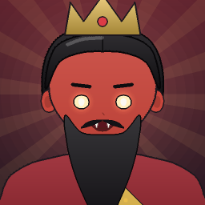
회랑 끝 높은 자리에서 염라대왕이 찢긴 명부를 기다린다.
결계 줄은 회복이 막힌다. 절반이 되면 우두·마면을 부른다.
합류 · 카게로
한 줄 글은 각 장 시작 화면의 글에서, 붉은 글은 그 보스 스테이지의 팁에서 옮겼다.
뽑기 운이 전혀 없어도 권장 레벨만 맞추면 진행할 수 있게 맞춘다. 시작 다섯, 권장 레벨, 평범한 장비, 자동 배치, 재배치 없이 잰 기준 파티로 일반 스테이지 85% 이상, 보스 50~90%가 목표다.
골드와 수련서로 올린다. 레벨마다 기본 능력치 +5%, 최대 Lv.30.
뽑기에서 같은 동료가 다시 나오면 저절로 한 단계(0~5). 단계마다 능력치 +4%, 3단계 패시브 강화, 5단계 궁극기 ×1.3.
스킬 1·2·궁극기를 Lv.1~5로. 배율과 부가 효과가 함께 오른다.
무기·방어구·장신구 세 부위, 노말 → 레어 → 에픽 → 전설. 강화 +5까지, 실패 없음.
현무(방어) · 청룡(공격) · 백호(치명타) · 주작(체력). 한 동료가 2·3부위를 끼면 세트 효과가 붙는다.
토벌권(★3 스테이지·전투 건너뛰기), 수련서, 정련석, 던전 열쇠. 날짜에 묶인 출석·일일 임무 대신 장 업적으로 받는다.
| 동료 모집 | 장비 뽑기 | |
|---|---|---|
| 비용(보석) | 1회 100 · 10회 900 | 1회 60 · 10회 540 |
| 등급 확률 | 레어 79% · 에픽 18% · 전설 3% | 노말 50% · 레어 35% · 에픽 12% · 전설 3% |
| 천장 | 전설 없이 49번이면 50번째는 전설 | 에픽 이상 없이 19번이면 20번째는 에픽 이상 |
| 중복 | 돌파 1단계, 최대 뒤에는 골드 | 없음(모두 가방에) |
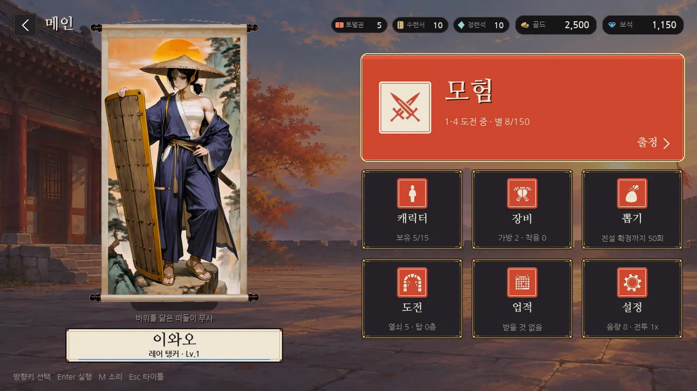
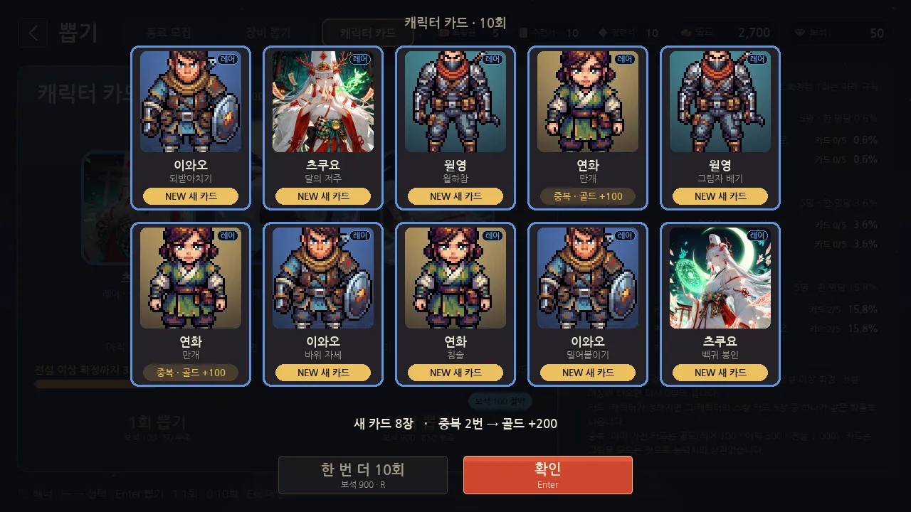
전투 밖에서도 즐길 거리. 모두 날짜가 아니라 진행도로 열린다.
골드·정련석·장비·각성석을 모으는 던전 넷. 열쇠로 들어간다.
한 층씩 오를수록 강해지고, 5층마다 보스. 들어선 장 × 5층까지, 스토리를 다 깨면 끝없이.
스토리 장마다 바뀌는 상대 진형 셋과 겨룬다. 보상은 장마다 상대마다 한 번.
정해진 동료와 적 진형으로, 라운드 사이에 자리를 옮겨야만 풀리는 10문제. 재배치 없이는 거의 풀리지 않는 진형만 골랐다.
요괴 53종의 설화 한 줄·출전·기술. 쓰러뜨린 수가 1·10·30마리에 닿으면 보상.
이긴 전투에 나간 동료의 인연이 오른다. 3·8·15에 이야기 한 편씩, 15명 × 3편.
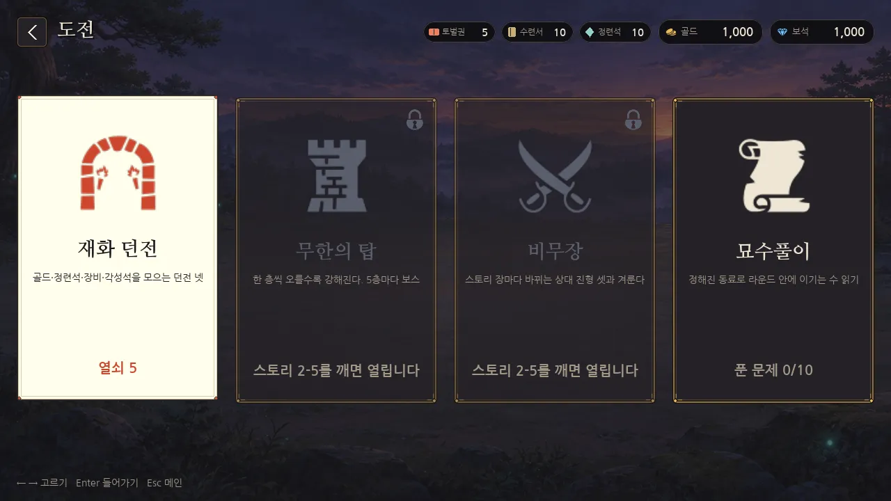
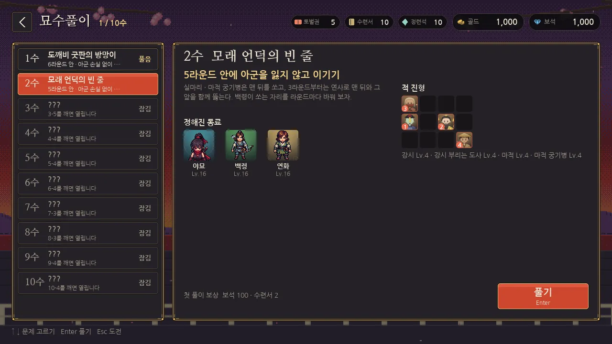
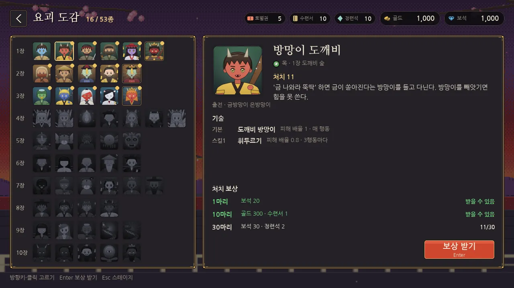
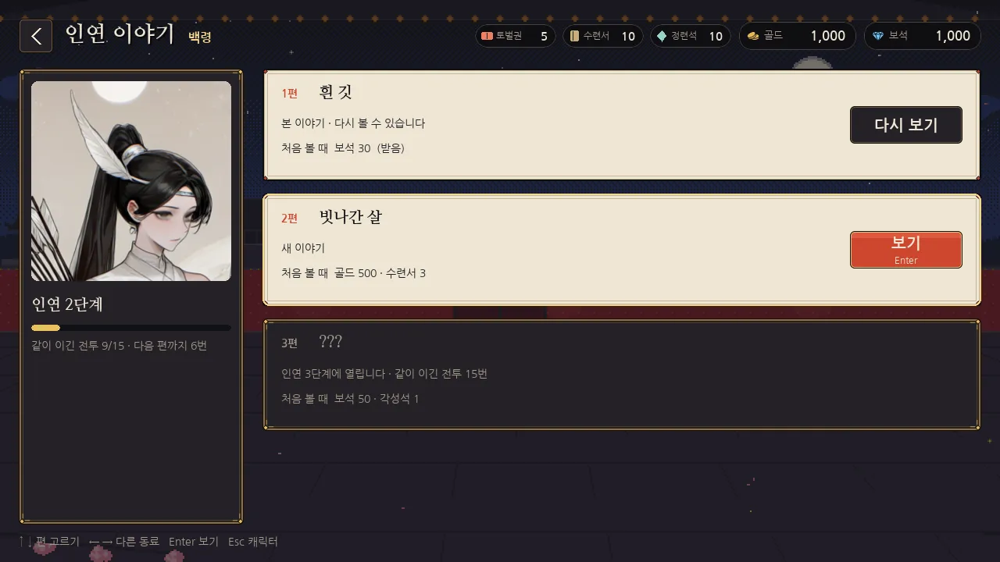
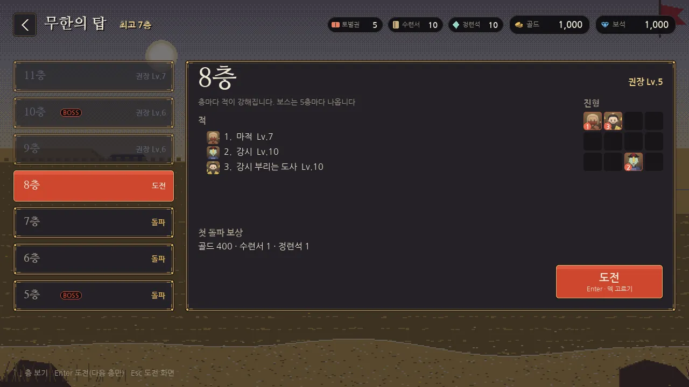
같은 전투로 한 판 30~40분짜리 로그라이크를 돈다. 뽑기와 육성 대신 판마다 다른 선택으로 승부한다. 행동 순서, 재배치, 예고 공격, 오행 상성은 "같은 판이 두 번 없는" 구조에서 더 빛난다는 생각에서 시작했다.
대장 한 명을 고르고 셋으로 출발해 최대 다섯까지 늘린다. 장마다 갈림길 지도를 지나 보스로 간다. 레벨은 판마다 1부터, 체력은 전투 사이에 이어진다. 전멸하면 그 판은 끝이다.
전투 · 정예 · 설화(짧은 글과 선택지) · 주막(엽전으로 사고 회복) · 사당(회복 또는 수련) · 보스. 갈라지는 두 길은 종류가 다르다.
이기면 셋 중 하나(새 동료 · 부적 · 돌파). 판이 끝나면 혼이 남아 동료를 해금하고, 봉인 단계로 어려움을 올린다. 날짜 시드의 오늘의 원정도 있다.
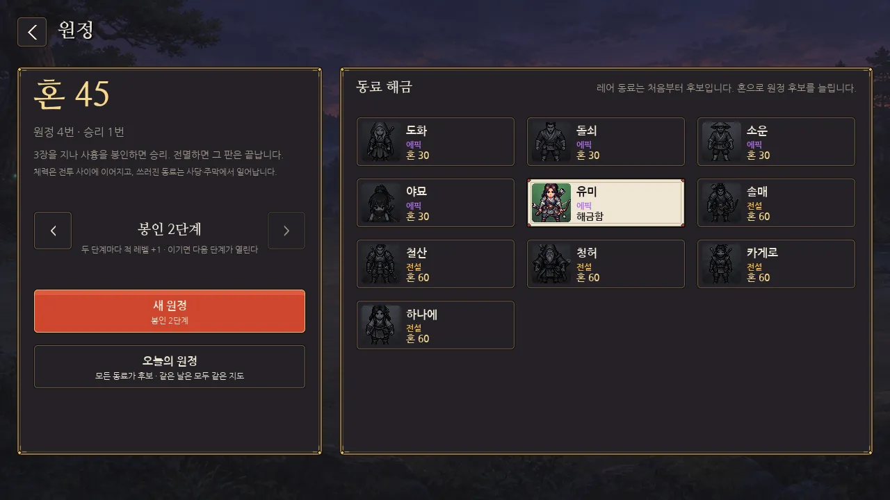
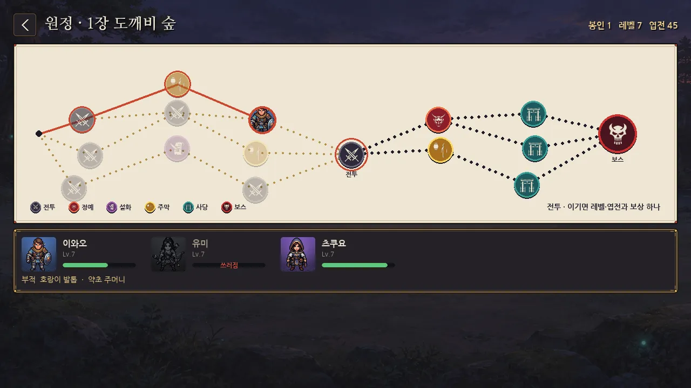
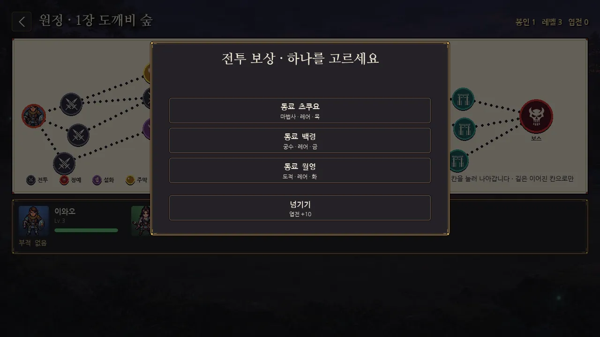
지도·보상·부적 13개·설화 6개·해금·봉인까지 들어가 있다. 전투 중에 발동하는 부적, 사흉 보스별 기믹, 긴 원정은 아직이다.
전투 유닛은 픽셀 아트(정수배로만 키운다), 동료는 족자 일러스트, 배경은 붓 그림. UI는 먹 · 한지 · 주홍 · 금 네 가지 색과 한지 패널(9-slice)로 통일했다. 화면이 바뀔 때 이전 그림이 녹아 사라진다.
가야금 · 북 · 징 느낌의 효과음과 동양풍 배경음. 효과음 일부는 코드로 합성했고, 나머지와 배경음은 CC0 공개 음원이다. 피해 숫자가 뜨는 순간에 정확히 소리가 난다.
Python + pygame-ce. 전투 규칙(core)은 화면 코드와 완전히 나뉘어 있고 난수까지 시드로 고정된다. 세이브는 버전과 이전 규칙을 둔다. PyInstaller 실행 파일과 pygbag 브라우저 버전으로 묶는다.

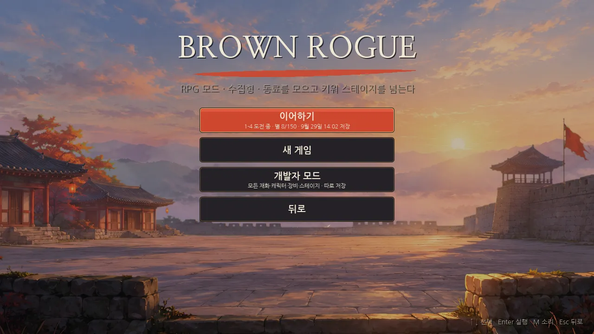
git 기록으로는 2026-10-04부터 10-12까지 128번 커밋했다. 처음에는 7일짜리 로그라이크(3×3)로 시작했다가 스테이지형 수집 RPG로 바꿨고, 지금은 두 모드가 함께 들어 있다.